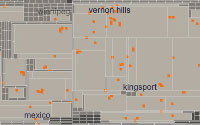
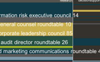
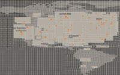

The first visualization shows the worldwide traffic flows of customer interaction with the corporate website and how these change over the course of the day. The second visualization tracks the most common phrases used to search the corporate website and shows which phrases are correlated with particular business sectors. The third visualization outlines the recent activity of particular business sectors and the types of content that are most popular within those sectors.
|  |  |  |
Data Flow was commissioned by George Legrady Studio and was developed in collaboration with George Legrady.